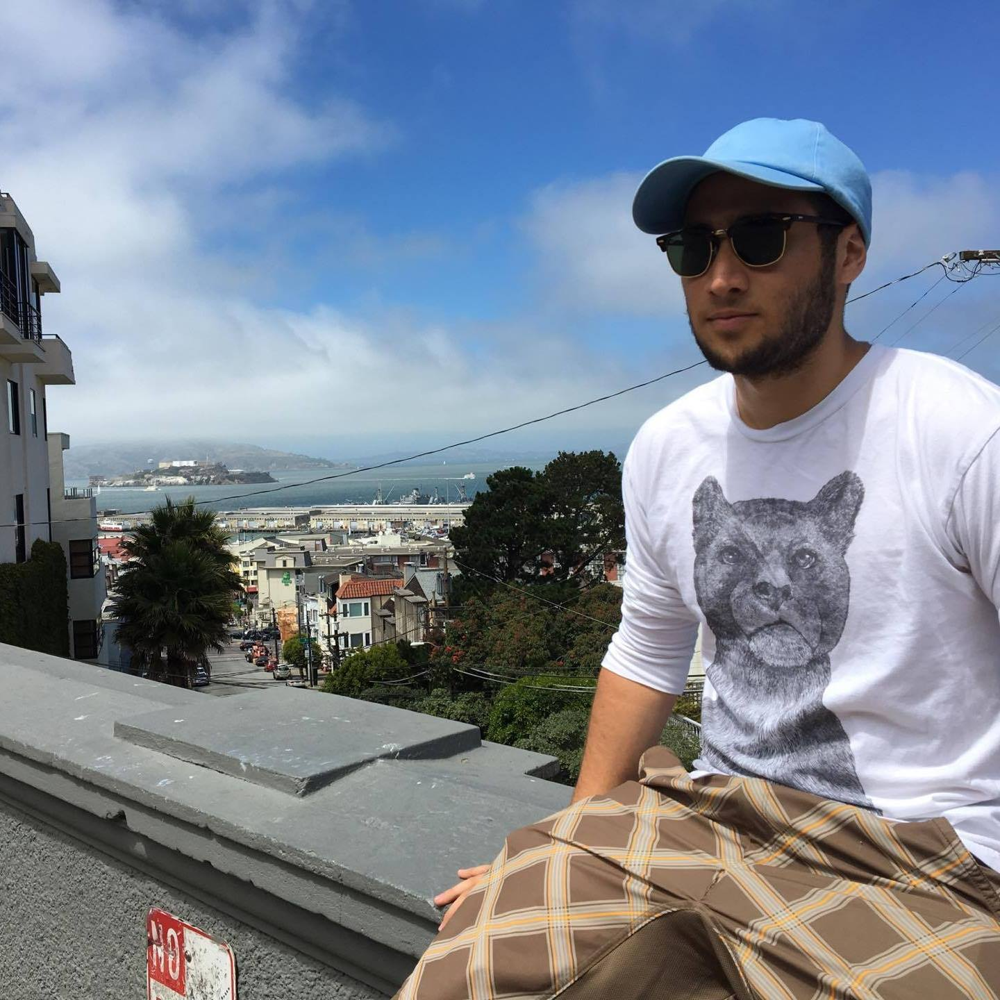

Device Characterization Engineer
Mississauga, Ontario, Canada
sammy.alhashemi@mail.utoronto.ca
(408)-908-9512
Skills
Python
Java
Angular
- -
Languages
English
2016
2015
Enrolled in the Engineering Science Program. I chose the Physics option which focuses on engineering design with major physics applications
cGPA: 3.56
High School Diploma
Electromechanical member of a group building a robot capable of scanning a pipe for “radioactive waste” (black dots) and count the occurrences.
Team meetings twice a week to update on our individual progress and collaborate on future plans
It follows the following constraints:
Be able to scan dots located anywhere of the circumference of the pipe and at any location along the pipe’s length.
Not scratch the pipe
Include an emergency stop button
To record the number of instances of black dots and record their location